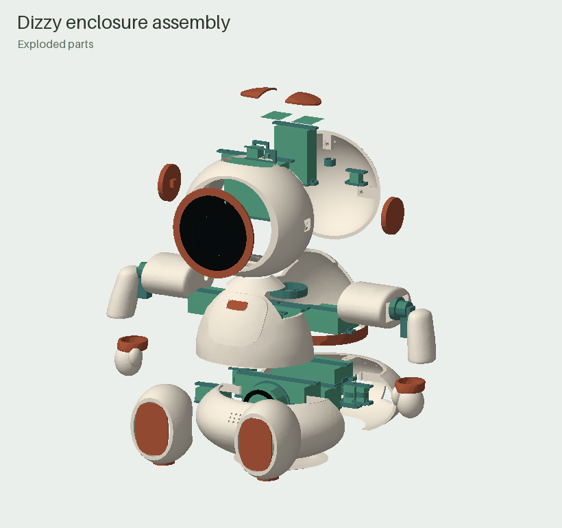

Drag to rotate · scroll to zoom
Parts catalogue
Loading catalogue…
Hardware allowances show component size and placement. Printable parts have STL and STEP downloads.
Assembly sequence
From the separate CAD parts to the closed enclosure.

Download GIF
Browse the parts

The animation shows assembly groups. Check the build guide for fasteners, wiring and physical fit.
Drag to rotate · scroll to zoom